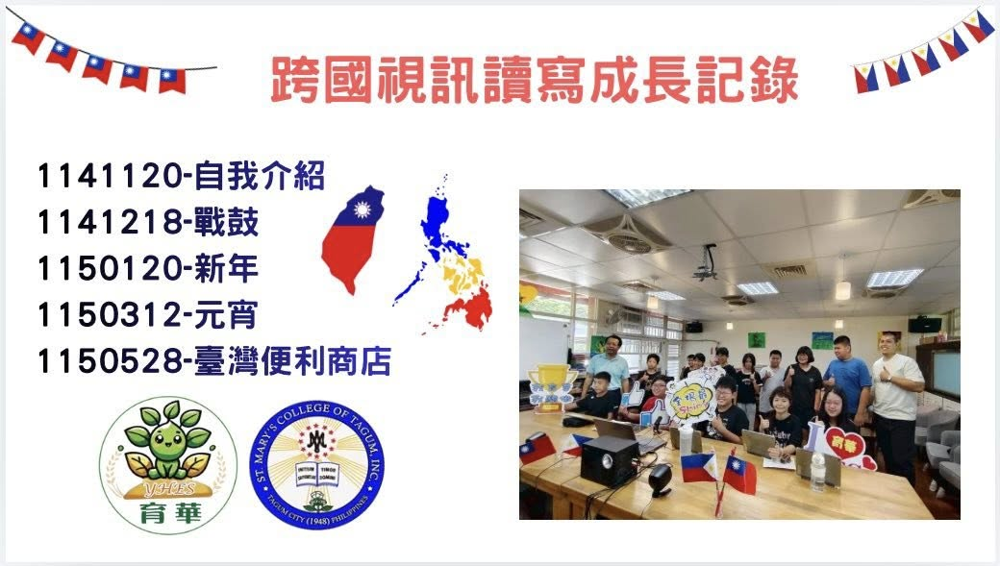
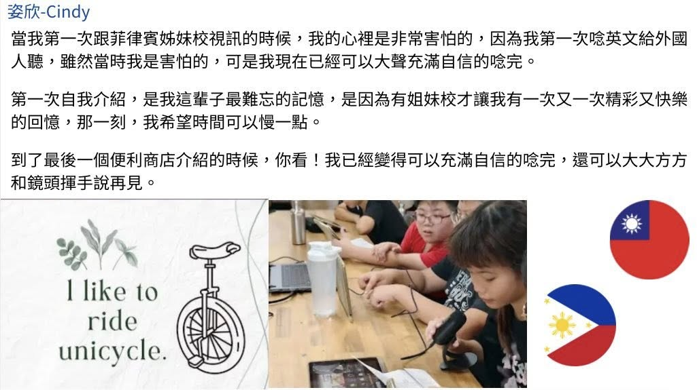
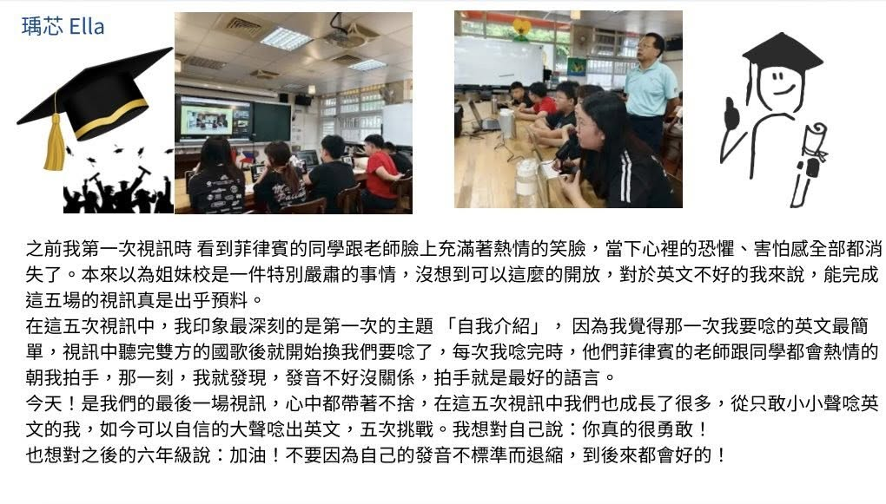
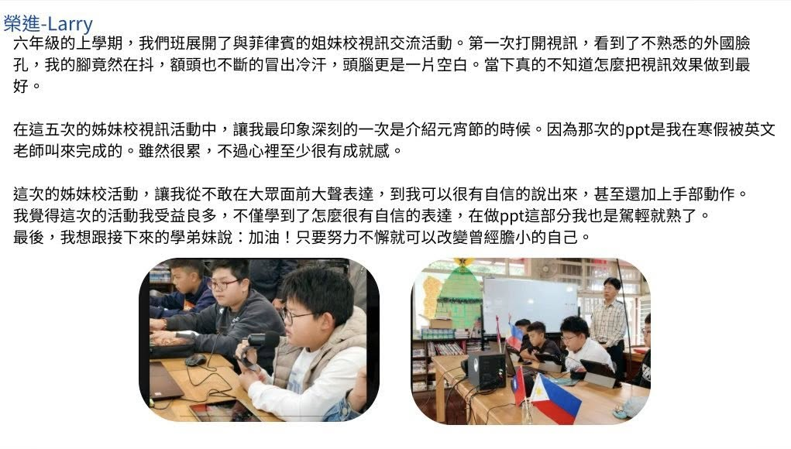
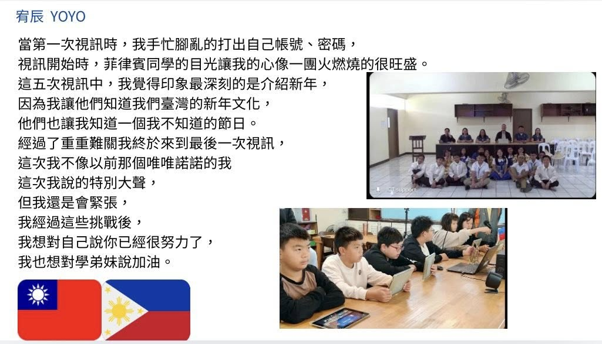
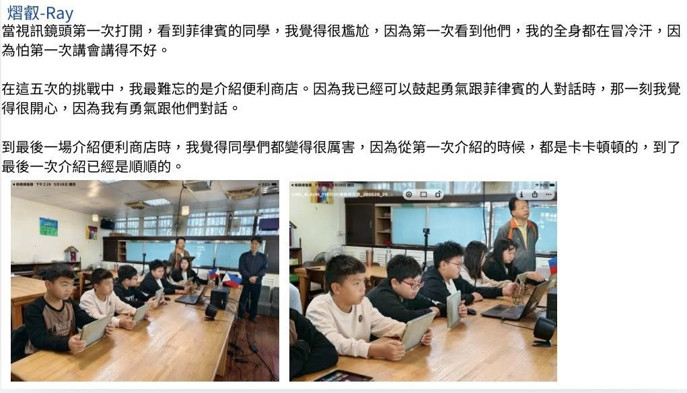

The first time the camera turned on, their hands shook. Five sessions later, they were waving goodbye in English.
Building on the sister-school MOU signed in November 2025, Yuhua Elementary's sixth-graders met their counterparts at St. Mary's College of Tagum, Inc. in the Philippines over five cross-national video calls between November 2025 and May 2026. Each call had a theme — self-introductions, the school war-drum team, the Lunar New Year, the Lantern Festival, and Taiwan's convenience stores — and the children prepared and delivered their own English presentations, introducing the culture and everyday life of Taiwan to friends across the sea.
For many, the first call was the hardest part. Faced with unfamiliar faces on the screen, some felt their legs shake and their minds go blank. But session by session, the nervousness wore off — from reading English in a whisper to speaking up with confidence, even adding hand gestures. Each time a child finished, the students and teachers in the Philippines broke into warm applause. As one child put it, “a round of applause is the best language.”
Guided by Teacher Cheng-hsiang (程翔老師) and Director Hui-min (惠閔主任), and accompanied by Teacher Yi-ting (譯霆老師) and Teacher Shu-min (書民老師), the children built a bridge of friendship with sincere smiles and growing confidence. Along the way they did more than practise English: they learned to respect and appreciate a different culture, and widened their view of the world. For a coastal school of fewer than fifty children, this was not only a stage for language learning — it was a first step into citizen diplomacy.
延續 2025 年 11 月簽署的姐妹校合作備忘錄，育華持續推動與菲律賓姐妹校 St. Mary's College of Tagum 的國際教育交流。透過五次跨國視訊互動，孩子們在真實情境中學習英語、認識多元文化。第一次面對鏡頭時，許多孩子難免緊張與害怕，但在一次次交流與練習中，逐漸克服陌生感，從小聲朗讀到自信表達，勇敢展現自我風采。
交流主題涵蓋自我介紹、戰鼓、新年、元宵節及臺灣便利商店等內容。學生透過英語簡報與分享，向國外友人介紹臺灣獨特的文化特色與生活樣貌，展現育華學子的創意與熱情。在互動過程中，孩子們不僅提升語言能力，也學習尊重與欣賞不同文化，拓展國際視野。這場跨國交流不只是語言學習的舞台，更是國民外交的起點。
學生們在程翔老師、惠閔主任的指導，以及譯霆老師、書民老師的陪伴下，以真誠的笑容與自信的表現搭起友誼橋梁，促進國際理解與文化交流，培養放眼世界的胸懷與格局。相信這段珍貴的學習旅程，將成為孩子成長道路上最美好的回憶，也為未來接軌世界奠定良好基礎。
In their own words — the children's reflections on five video calls across the sea. 孩子們親手寫下的五次視訊心得。






Source · 育華國小 Facebook · #自信開口說英語 #雙語學習國際教育 #BilingualEducation
In partnership with 彰化縣人師教育協會 · My Culture Connect